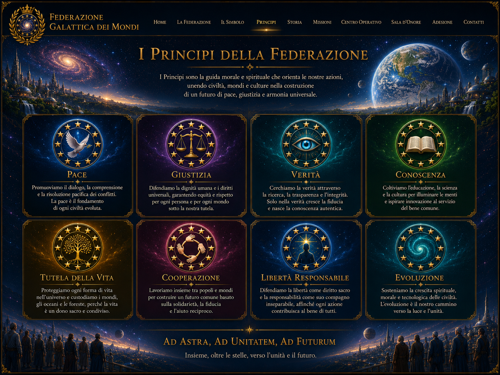

Fondamenti della Federazione
Otto riferimenti per orientare idee, decisioni, relazioni e missioni.

Prevenzione dei conflitti, dialogo, mediazione e rifiuto della distruzione.
Tutela della dignità, uguaglianza davanti alle regole e responsabilità.
Ricerca onesta e distinzione tra fatti, ipotesi, testimonianze e interpretazioni.
Educazione, studio, cultura, ricerca e accesso consapevole alle informazioni.
Rispetto e protezione di ogni forma di vita e degli ecosistemi che la sostengono.
Lavorare insieme per il bene comune, valorizzando le diversità.
Libertà di pensiero, parola e scelta esercitata con consapevolezza e rispetto.
Crescita continua della coscienza individuale e collettiva in armonia con il cosmo.